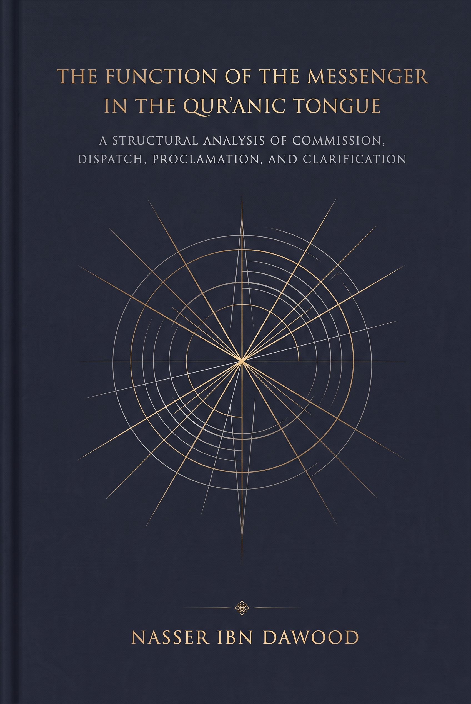

120. The Function of the Messenger in the Qur’anic Tongue — A Structural Analysis of Commission, Dispatch, Proclamation, and Clarification

A study of the Messenger’s functions and the relations among commissioning, sending, proclamation, and clarification. It proposes a framework for examining reports and their scope of authority while distinguishing Qur’anic evidence from authorial inference. Condensed conceptual English adaptation.
This is a condensed conceptual English edition, not a complete word-for-word translation. The Arabic text remains the primary source for detailed analysis and references.
قراءة PDF داخل الموقع / Read the PDF on this website
جارٍ تجهيز القارئ… / Preparing the reader…
Book Summary, Table of Contents & Excerpt
The Function of the Messenger in the Qur’anic Tongue
A Structural Analysis of Commission, Dispatch, Proclamation, and Clarification
Nasser Ibn Dawood
Condensed Conceptual Adaptation (English Edition — 2026)
I. The Global Knowledge Manifesto
Knowledge is a universal right. The author firmly believes that wisdom should not be locked behind paywalls or language barriers.
• Open access is an aim of this edition. Availability and formats should be checked at the author’s library.
• This adaptation does not establish the current number of titles or independently audit the digital library.
• Official Platforms: Main Website: nasserhabitat.github.io/nasser-books/ | GitHub: nasserhabitat/nasser-books
The library information supplied for the original adaptation is retained as a pointer for readers, without treating its inventory as verified research evidence.
II. Translator’s Note: The Bridge of Meaning
This English edition is a condensed conceptual adaptation. It is not a word-for-word translation, but rather an "extraction of essence." It presents the core philosophical and Qur’anic framework in accessible English, omitting the exhaustive linguistic debates and classical references found in the original Arabic text.
For the academic researcher: The original Arabic version remains the primary source for comprehensive linguistic analysis, detailed exegesis (Tafsir), and the complete bibliography.
The five methodological levels are Qur’anic text, linguistic explanation, inference, hypothesis under examination, and operational model. Simplification must preserve their differences. An interpretation is not made certain by being placed beside a verse.
Key terms include baʿth (raising or commissioning, with resurrection in relevant contexts), irsāl (sending), rasūl (messenger), nabī (prophet), balāgh (conveyance), bayān (clarification), ḥukm (judgment), tazkiyah (purification), and ḥamd (praise). Further conceptual readings of these terms belong to the author’s interpretative model.
1 The Epistemic Problematic — Decoupling Text from Historiography
1.1 The Classical Dilemma: Textual Monopoly vs. Reactive Rejectionism
Debates about Qur’anic interpretation and transmitted reports encompass diverse approaches to authenticity, authority, specification, and abrogation. This study examines that relationship without reducing the historical disciplines to a single position or dismissing reports as a class.
The inquiry asks what functions the Qur’an attributes to the Messenger. The author uses this textual inquiry to propose a framework for evaluating reports. The framework remains a human construction whose categories and applications require scrutiny alongside evidence about transmission and context.
1.2 The Five-Tier Epistemic Hierarchy
The following distinctions prevent an interpretation or analytical tool from acquiring the authority of the wording it seeks to explain. Linguistic explanations and inferences may themselves differ in confidence.
Epistemic Tier
Definition in Method
Epistemic Status
Methodological Guardrail
1. Qur’anic Text (Naṣṣ)
The exact, revealed consonantal text (Rasm) and context of the Qur’an.
Certain wording with interpretation distinguished
Do not equate wording with interpretation authority; non-negotiable baseline.
2. Linguistic Clarification (Bayān)
Morphological and syntactical analysis within the Qur’anic tongue.
Assess each linguistic argument
Descriptive syntax; not dogmatic theological dictate.
3. Inductive Inference (Istinbāṭ)
Structural conclusions derived from synthesizing cross-Qur’anic patterns.
Inference with stated confidence
Subject to counter-pressure and textual qualification.
4. Testable Hypothesis (Farḍiyyah)
Proposed semantic models and functional distinctions.